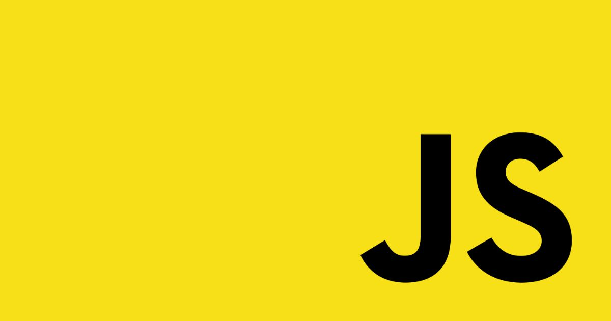
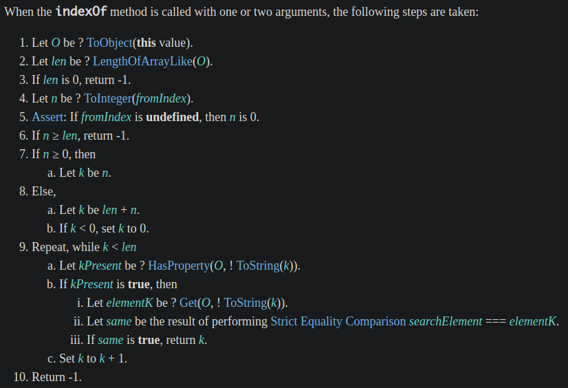
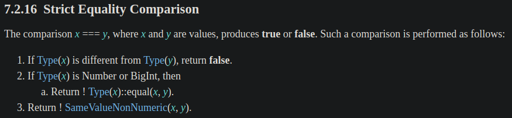
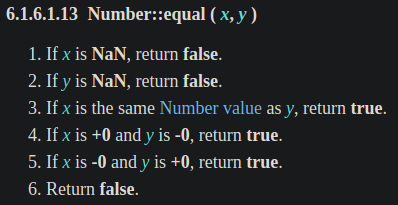
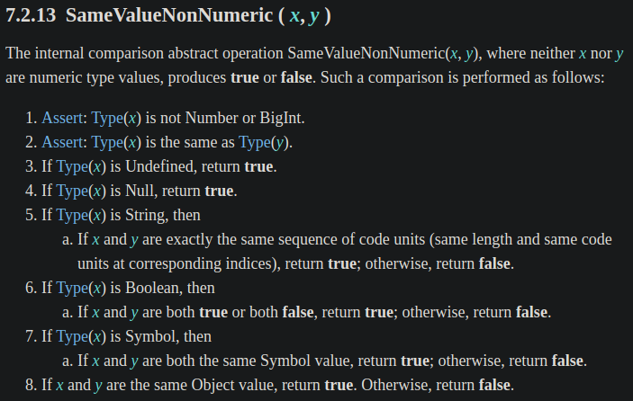
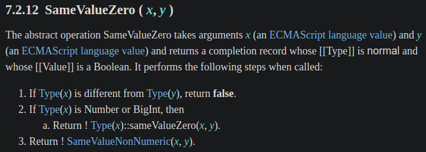
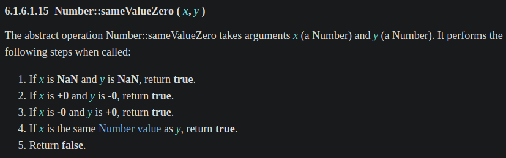

<!DOCTYPE html><html><head><meta charset="utf-8"><title>JavaScript 之旅 (2)：Array.prototype.includes() | Titangene Blog</title><meta http-equiv="X-UA-Compatible" content="IE=edge"><meta name="viewport" content="width=device-width,initial-scale=1,maximum-scale=1"><meta name="HandheldFriendly" content="True"><meta name="apple-mobile-web-app-capable" content="yes"><meta name="author" content="Titangene"><link rel="shortcut icon" href="/favicon.ico"><link rel="alternate" href="/atom.xml" title="Titangene Blog"><meta name="description" content="常會有找出陣列中是否包含某元素的需求，過去會使用 Array.prototype.indexOf() 來處理，但在 ES2016 (ES7) 提供了 Array.prototype.includes() 新的 Array method，更方便好用，那這兩個差在哪？解決過去的哪些問題？讓我們從 ECMAScript spec 中一探究竟吧。"><meta property="og:type" content="article"><meta property="og:title" content="JavaScript 之旅 (2)：Array.prototype.includes()"><meta property="og:url" content="https://titangene.github.io/article/javascript-array-includes.html"><meta property="og:site_name" content="Titangene Blog"><meta property="og:description" content="常會有找出陣列中是否包含某元素的需求，過去會使用 Array.prototype.indexOf() 來處理，但在 ES2016 (ES7) 提供了 Array.prototype.includes() 新的 Array method，更方便好用，那這兩個差在哪？解決過去的哪些問題？讓我們從 ECMAScript spec 中一探究竟吧。"><meta property="og:locale" content="zh_TW"><meta property="og:image" content="https://titangene.github.io/images/cover/javascript.jpg"><meta property="article:published_time" content="2020-09-17T05:36:56.000Z"><meta property="article:modified_time" content="2020-09-17T05:45:33.804Z"><meta property="article:author" content="Titangene"><meta property="article:tag" content="IT 鐵人賽"><meta property="article:tag" content="ECMAScript"><meta name="twitter:card" content="summary_large_image"><meta name="twitter:image" content="https://titangene.github.io/images/cover/javascript.jpg"><meta name="twitter:creator" content="@titangeneTW"><meta name="twitter:site" content="@titangene_blog"><meta property="fb:admins" content="100001106016019"><meta property="fb:app_id" content="2470546159839111"><meta property="og:image:width" content="1200"><meta property="og:image:height" content="630"><meta name="google-site-verification" content="AaJ39L7h-nWwJjXJMhAMtXSF6H6BUgGWXC80kYvLic8"><link href="https://fonts.googleapis.com/css2?family=Roboto&display=swap" rel="stylesheet"><link href="https://fonts.googleapis.com/css?family=Source+Code+Pro&display=swap" rel="stylesheet"><link rel="stylesheet" href="https://cdnjs.cloudflare.com/ajax/libs/font-awesome/5.13.0/css/all.min.css"><link rel="stylesheet" href="https://unpkg.com/gitalk/dist/gitalk.css"><link rel="stylesheet" href="/style.css"><script async src="https://www.googletagmanager.com/gtag/js?id=G-KX04S5LSX1"></script><script>!function(a){function n(){dataLayer.push(arguments)}a.dataLayer=a.dataLayer||[],n("js",new Date),n("config","G-KX04S5LSX1")}(window)</script><script>function setLoadingBarProgress(e){document.getElementById("loading-bar").style.width=e+"%"}</script><meta name="generator" content="Hexo 4.2.0"><link rel="alternate" href="/atom.xml" title="Titangene Blog" type="application/atom+xml"></head></html><body><div id="loading-bar-wrapper"><div id="loading-bar"></div></div><script>setLoadingBarProgress(20)</script><header class="l_header"><div class="wrapper"><div class="nav-main container container--flex"><a class="logo flat-box" href="/">Titangene Blog</a><div class="menu"><ul class="h-list"><li><a class="flat-box nav-home" href="/">Home</a></li><li><a class="flat-box nav-archives" href="/archives">Archives</a></li></ul><div class="underline"></div></div><div class="m_search"><form name="searchform" class="form u-search-form"><input type="text" class="input u-search-input" placeholder="Search"> <i class="fas fa-search"></i></form></div><ul class="switcher h-list"><li class="s-search"><a class="fas fa-search" href="javascript:void(0)"></a></li><li class="s-menu"><a class="fas fa-bars" href="javascript:void(0)"></a></li></ul></div><div class="nav-sub container container--flex"><a class="logo flat-box" href="/">Titangene Blog</a><ul class="switcher h-list"><li class="s-comment"><a class="far fa-comment-alt" href="javascript:void(0)"></a></li><li class="s-top"><a class="fas fa-arrow-up" href="javascript:void(0)"></a></li><li class="s-toc"><a class="fas fa-list-ol" href="javascript:void(0)"></a></li></ul></div></div></header><aside class="menu-phone"><nav><a href="/" class="nav-home nav">Home </a><a href="/archives" class="nav-archives nav">Archives</a></nav></aside><script>setLoadingBarProgress(40)</script><div class="l_body"><div class="container clearfix"><div class="l_main"><article id="post-javascript-array-includes" class="post white-box article-type-post" itemscope itemprop="blogPost"><section class="meta"><h2 class="title"><a href="/article/javascript-array-includes.html">JavaScript 之旅 (2)：Array.prototype.includes()</a></h2><span class="post-time"><span class="post-meta-item-icon"><i class="fa fa-calendar"></i> </span><span class="post-meta-item-text">發表於</span> <time title="建立時間：2020-09-17 13:36:56" itemprop="dateCreated datePublished" datetime="2020-09-17T13:36:56+08:00">2020-09-17 </time><span class="post-meta-divider">|</span> <span class="post-meta-item-icon"><i class="fa fa-calendar-check"></i> </span><span class="post-meta-item-text">更新於</span> <time title="修改時間：2020-09-17 13:45:33" itemprop="dateModified" datetime="2020-09-17T13:45:33+08:00">2020-09-17</time></span> <span class="comments-count"><span class="post-meta-divider">|</span> <span class="post-meta-item-icon"><i class="fas fa-comment"></i> </span><a href="https://titangene.github.io/article/javascript-array-includes.html#comments" class="article-comment-count">留言</a></span><div class="post-category"><span class="post-meta-item-icon"><i class="fa fa-folder"></i> </span><span class="post-meta-item-text">分類於</span> <span itemprop="about" itemscope itemtype="http://schema.org/Thing"><a href="/categories/javascript/" itemprop="url" rel="index"><span itemprop="name">JavaScript</span></a></span></div></section><section class="toc-wrapper"><h3>目錄</h3><ol class="toc"><li class="toc-item toc-level-1"><a class="toc-link" href="#過去的-Array-prototype-indexOf"><span class="toc-text">過去的 Array.prototype.indexOf()</span></a></li><li class="toc-item toc-level-1"><a class="toc-link" href="#現代的-Array-prototype-includes"><span class="toc-text">現代的 Array.prototype.includes()</span></a></li><li class="toc-item toc-level-1"><a class="toc-link" href="#spec-定義"><span class="toc-text">spec 定義</span></a><ol class="toc-child"><li class="toc-item toc-level-2"><a class="toc-link" href="#Array-prototype-indexOf-的-spec-定義"><span class="toc-text">Array.prototype.indexOf() 的 spec 定義</span></a></li><li class="toc-item toc-level-2"><a class="toc-link" href="#Array-prototype-includes-的-spec-定義"><span class="toc-text">Array.prototype.includes() 的 spec 定義</span></a></li><li class="toc-item toc-level-2"><a class="toc-link" href="#嚴格相等比較-vs-SameValueZero"><span class="toc-text">嚴格相等比較 vs. SameValueZero</span></a><ol class="toc-child"><li class="toc-item toc-level-3"><a class="toc-link" href="#嚴格相等比較-的-spec-定義"><span class="toc-text">嚴格相等比較 的 spec 定義</span></a></li><li class="toc-item toc-level-3"><a class="toc-link" href="#SameValueZero-的-spec-定義"><span class="toc-text">SameValueZero 的 spec 定義</span></a></li></ol></li></ol></li><li class="toc-item toc-level-1"><a class="toc-link" href="#polyfill"><span class="toc-text">polyfill</span></a></li><li class="toc-item toc-level-1"><a class="toc-link" href="#資料來源："><span class="toc-text">資料來源：</span></a></li></ol></section><section class="article typo"><div class="article-entry" itemprop="articleBody"><p></p><p>常會有找出陣列中是否包含某元素的需求，過去會使用 <code>Array.prototype.indexOf()</code> 來處理，但在 ES2016 (ES7) 提供了 <code>Array.prototype.includes()</code> 新的 Array method，更方便好用，那這兩個差在哪？解決過去的哪些問題？讓我們從 ECMAScript spec 中一探究竟吧。</p><a id="more"></a><blockquote><p>本文同步發表於 iT 邦幫忙：<a href="https://ithelp.ithome.com.tw/articles/10238101" target="_blank" rel="noopener">JavaScript 之旅 (2)：Array.prototype.includes()</a></p><p>「JavaScript 之旅」系列文章發文於：</p><ul><li><a href="https://ithelp.ithome.com.tw/users/20117586/ironman/3607" target="_blank" rel="noopener">iT 邦幫忙</a></li><li><a href="https://titangene.github.io/tags/it-%E9%90%B5%E4%BA%BA%E8%B3%BD/">Titangene Blog</a></li></ul></blockquote><h1 id="過去的-Array-prototype-indexOf"><a class="header-anchor" href="#過去的-Array-prototype-indexOf"></a>過去的 <code>Array.prototype.indexOf()</code></h1><p>若要確定陣列內是否包含某元素，過去常見的作法是使用 <code>Array.prototype.indexOf()</code>，你應該有看過這幾種寫法：</p><figure class="highlight javascript"><table><tr><td class="gutter"><pre><span class="line">1</span><br><span class="line">2</span><br><span class="line">3</span><br><span class="line">4</span><br><span class="line">5</span><br><span class="line">6</span><br><span class="line">7</span><br><span class="line">8</span><br><span class="line">9</span><br><span class="line">10</span><br><span class="line">11</span><br></pre></td><td class="code"><pre><code class="hljs javascript"><span class="hljs-keyword">let</span> array = [<span class="hljs-string">'JS'</span>, <span class="hljs-string">'ECMA'</span>, <span class="hljs-string">'TC39'</span>];<br><span class="hljs-keyword">let</span> searchElement = <span class="hljs-string">'ECMA'</span>;<br><br><span class="hljs-built_in">console</span>.log(array.indexOf(searchElement) !== <span class="hljs-number">-1</span>);  <span class="hljs-comment">// true</span><br><span class="hljs-built_in">console</span>.log(array.indexOf(searchElement) &gt;= <span class="hljs-number">0</span>);    <span class="hljs-comment">// true</span><br><br><span class="hljs-keyword">if</span> (~array.indexOf(searchElement)) &#123;<br>  <span class="hljs-built_in">console</span>.log(<span class="hljs-string">'找到啦！'</span>);  <span class="hljs-comment">// 找到啦！</span><br>&#125; <span class="hljs-keyword">else</span> &#123;<br>  <span class="hljs-built_in">console</span>.log(<span class="hljs-string">'找不到 QQ'</span>);<br>&#125;<br></code></pre></td></tr></table></figure><p>利用 <code>Array.prototype.indexOf()</code> 回傳的 index 來確定陣列內是否包含該元素：</p><ul><li>回傳 <code>-1</code> 代表陣列內沒有該元素</li><li>否則就是找到的元素的 index 值</li></ul><p>但這些寫法有一些問題：</p><ul><li>不直覺：需透過 <a href="https://developer.mozilla.org/en-US/docs/Web/JavaScript/Reference/Global_Objects/Array/indexOf" target="_blank" rel="noopener"><code>Array.prototype.indexOf()</code></a> 來問該元素在陣列中第一次被找到的 index 為何，然後使用比較運算子 (即 <code>===</code>、<code>&gt;=</code> 等) 或位元運算子 (即 <a href="https://developer.mozilla.org/en-US/docs/Web/JavaScript/Reference/Operators/Bitwise_NOT" target="_blank" rel="noopener"><code>~</code></a> ) 來確定該元素是否存在</li><li>寫法不統一：每個人對於比較運算子的使用習慣不同，有些人會用 <code>!== -1</code>，有些人會用 <code>&gt;= 0</code> … 等，但明明都是一樣的行為</li><li>不適用於 <code>NaN</code>：因為 <code>Array.prototype.indexOf()</code> 是用嚴格相等來比較，而 <code>NaN !== NaN</code> ( <code>NaN</code> 本來就不等於自己)，所以你無法在陣列中找出 <code>NaN</code></li></ul><figure class="highlight javascript"><table><tr><td class="gutter"><pre><span class="line">1</span><br></pre></td><td class="code"><pre><code class="hljs javascript"><span class="hljs-built_in">console</span>.log([<span class="hljs-literal">NaN</span>].indexOf(<span class="hljs-literal">NaN</span>) !== <span class="hljs-number">-1</span>);  <span class="hljs-comment">// false</span><br></code></pre></td></tr></table></figure><h1 id="現代的-Array-prototype-includes"><a class="header-anchor" href="#現代的-Array-prototype-includes"></a>現代的 <code>Array.prototype.includes()</code></h1><p>於是在 ES2016 (ES7) 提供了 <code>Array.prototype.includes()</code> 新的 Array method，不用管陣列的 index，直接就會回傳是否包含該元素的 Boolean 值，<code>true</code> 代表包含，<code>false</code> 則代表不包含，非常直覺又方便：</p><figure class="highlight javascript"><table><tr><td class="gutter"><pre><span class="line">1</span><br><span class="line">2</span><br><span class="line">3</span><br><span class="line">4</span><br></pre></td><td class="code"><pre><code class="hljs javascript"><span class="hljs-keyword">let</span> array = [<span class="hljs-string">'JS'</span>, <span class="hljs-string">'ECMA'</span>, <span class="hljs-string">'TC39'</span>];<br><span class="hljs-keyword">let</span> searchElement = <span class="hljs-string">'ECMA'</span>;<br><br><span class="hljs-built_in">console</span>.log(array.includes(searchElement));  <span class="hljs-comment">// true</span><br></code></pre></td></tr></table></figure><p>而且也可以解決 <code>NaN</code> 的問題：</p><figure class="highlight javascript"><table><tr><td class="gutter"><pre><span class="line">1</span><br></pre></td><td class="code"><pre><code class="hljs javascript"><span class="hljs-built_in">console</span>.log([<span class="hljs-literal">NaN</span>].includes(<span class="hljs-literal">NaN</span>));  <span class="hljs-comment">// true</span><br></code></pre></td></tr></table></figure><blockquote><p>後面會解釋 <code>Array.prototype.includes()</code> 是如何解決 <code>NaN</code> 的問題，spec 其實都有告訴你！</p></blockquote><p>另外為了一致性，<code>Array.prototype.includes()</code> 的參數用法跟 <code>Array.prototype.indexOf()</code> 的一樣，下面是他們的語法：</p><figure class="highlight javascript"><table><tr><td class="gutter"><pre><span class="line">1</span><br><span class="line">2</span><br></pre></td><td class="code"><pre><code class="hljs javascript"><span class="hljs-built_in">Array</span>.prototype.indexOf(searchElement[, fromIndex])<br><span class="hljs-built_in">Array</span>.prototype.includes(searchElement[, fromIndex])<br></code></pre></td></tr></table></figure><blockquote><p>註：<code>[, fromIndex]</code> 中的 <code>[]</code> 不是代表陣列，在語法表示法中代表的是可選參數，而 <code>Array.prototype.includes()</code> 和 <code>Array.prototype.indexOf()</code> 的可選參數 <code>fromIndex</code> 預設為 <code>0</code>，代表會從陣列的最前面開始尋找符合的元素。</p></blockquote><p>兩者實際使用的行為一樣 (除了剛剛提到的 <code>NaN</code> 之外)：</p><figure class="highlight javascript"><table><tr><td class="gutter"><pre><span class="line">1</span><br><span class="line">2</span><br><span class="line">3</span><br><span class="line">4</span><br><span class="line">5</span><br></pre></td><td class="code"><pre><code class="hljs javascript"><span class="hljs-keyword">let</span> array = [<span class="hljs-string">'JS'</span>, <span class="hljs-string">'ECMA'</span>, <span class="hljs-string">'TC39'</span>, <span class="hljs-string">'JS'</span>, <span class="hljs-string">'ECMA'</span>];<br><span class="hljs-keyword">let</span> searchElement = <span class="hljs-string">'JS'</span>;<br><br><span class="hljs-built_in">console</span>.log(array.indexOf(searchElement, <span class="hljs-number">2</span>) !== <span class="hljs-number">-1</span>);  <span class="hljs-comment">// true</span><br><span class="hljs-built_in">console</span>.log(array.includes(searchElement, <span class="hljs-number">2</span>));  <span class="hljs-comment">// true</span><br></code></pre></td></tr></table></figure><blockquote><p>關於為什麼 <code>includes()</code> 要命名成 <code>includes</code>，而不是 <code>has</code> 或 <code>contains</code>，可參閱 <a href="https://github.com/tc39/Array.prototype.includes#faqs" target="_blank" rel="noopener">tc39/Array.prototype.includes 的 FAQ</a>。</p></blockquote><h1 id="spec-定義"><a class="header-anchor" href="#spec-定義"></a>spec 定義</h1><h2 id="Array-prototype-indexOf-的-spec-定義"><a class="header-anchor" href="#Array-prototype-indexOf-的-spec-定義"></a><code>Array.prototype.indexOf()</code> 的 spec 定義</h2><p>先來看看 <a href="http://www.ecma-international.org/ecma-262/#sec-array.prototype.indexof" target="_blank" rel="noopener"><code>Array.prototype.indexOf()</code></a> 在 spec 的定義：</p><p></p><p>大致上就是從陣列中找出與 <code>searchElement</code> match 的元素，用嚴格相等比較 (Strict Equality Comparison) 來確認 <code>searchElement</code> 是否與陣列中的某元素相同。</p><blockquote><p>在 spec 定義的 1~6 步驟明確說明，何時才會真正開始從陣列中尋找 match 的元素，在某些條件下會直接回傳 <code>-1</code>，例如：陣列的 length 等於 0，或是 <code>fromIndex</code> 的值大於陣列的 length 的時候。</p></blockquote><h2 id="Array-prototype-includes-的-spec-定義"><a class="header-anchor" href="#Array-prototype-includes-的-spec-定義"></a><code>Array.prototype.includes()</code> 的 spec 定義</h2><p>接著來看 <a href="http://www.ecma-international.org/ecma-262/#sec-array.prototype.includes" target="_blank" rel="noopener"><code>Array.prototype.includes()</code></a> 在 spec 的定義：</p><p></p><p>大致上的定義和 <code>Array.prototype.indexOf()</code> 非常像，但有一些不同：</p><ul><li>回傳值變成 Boolean 值，而不是 index 值 (型別為 Number)</li><li>在比對 <code>searchElement</code> 是否 match 陣列中的元素時，使用的是 SameValueZero 演算法，而不是嚴格相等比較<ul><li>透過 SameValueZero 演算法可以找出陣列中的 <code>NaN</code> 元素</li></ul></li><li>不會跳過空缺的陣列元素 (即 empty slot)，而是視為 <code>undefined</code> (所以 <code>Array.prototype.indexOf()</code> 會跳過 empty slot，因為它在 spec 定義的步驟 9.a，只要沒有該 property 就會直接跳過，繼續比對下一個元素)</li></ul><figure class="highlight javascript"><table><tr><td class="gutter"><pre><span class="line">1</span><br><span class="line">2</span><br><span class="line">3</span><br><span class="line">4</span><br><span class="line">5</span><br><span class="line">6</span><br><span class="line">7</span><br><span class="line">8</span><br><span class="line">9</span><br></pre></td><td class="code"><pre><code class="hljs javascript"><span class="hljs-keyword">let</span> array = <span class="hljs-built_in">Array</span>(<span class="hljs-number">3</span>);<br><br><span class="hljs-built_in">console</span>.log(array);                   <span class="hljs-comment">// [empty × 3]</span><br><br><span class="hljs-built_in">console</span>.log(array.indexOf() !== <span class="hljs-number">-1</span>);  <span class="hljs-comment">// false</span><br><span class="hljs-built_in">console</span>.log(array.includes());        <span class="hljs-comment">// true</span><br><br><span class="hljs-built_in">console</span>.log(array.indexOf(<span class="hljs-literal">undefined</span>) !== <span class="hljs-number">-1</span>);  <span class="hljs-comment">// false</span><br><span class="hljs-built_in">console</span>.log(array.includes(<span class="hljs-literal">undefined</span>));        <span class="hljs-comment">// true</span><br></code></pre></td></tr></table></figure><p>看完 <code>Array.prototype.indexOf()</code> 和 <code>Array.prototype.includes()</code> 的定義之後，讓我們更深入看前者使用的嚴格相等比較 (Strict Equality Comparison) 和後者使用的 SameValueZero 演算法在 spec 中是如何定義的。</p><h2 id="嚴格相等比較-vs-SameValueZero"><a class="header-anchor" href="#嚴格相等比較-vs-SameValueZero"></a>嚴格相等比較 vs. SameValueZero</h2><h3 id="嚴格相等比較-的-spec-定義"><a class="header-anchor" href="#嚴格相等比較-的-spec-定義"></a>嚴格相等比較 的 spec 定義</h3><p>先來看 <code>Array.prototype.indexOf()</code> 使用的<a href="http://www.ecma-international.org/ecma-262/#sec-strict-equality-comparison" target="_blank" rel="noopener">嚴格相等比較 (Strict Equality Comparison)</a> 在 spec 的定義：</p><p></p><p>嚴格相等比較會先比較型別是否相同，不同就回傳 <code>false</code>。</p><p>然後，如果型別是 <code>Number</code> 或 <code>BigInt</code> 就會直接進行值的比較。<a href="http://www.ecma-international.org/ecma-262/#sec-numeric-types-number-equal" target="_blank" rel="noopener"><code>Number::equal</code></a> 的定義如下：</p><p></p><blockquote><p>在步驟 1 和 2 提到，只要值是 <code>NaN</code> 就會回傳 <code>false</code>，這就是 <code>NaN</code> 不等於 <code>NaN</code> 的原因</p></blockquote><p>回到嚴格相等比較的步驟 3：否則，其他型別會使用 <a href="http://www.ecma-international.org/ecma-262/#sec-samevaluenonnumeric" target="_blank" rel="noopener">SameValueNonNumeric</a> 演算法，spec 的定義如下：</p><p></p><ul><li>值為 <code>null</code> 或 <code>undefined</code> 時會回傳 <code>true</code></li><li><code>String</code> 型別就比對字串</li><li><code>Boolean</code>、<code>Symbol</code> 和 <code>Object</code> 型別都是比較值是否相同 (但 Object 型別的值必須是同一個參考)</li></ul><p>如果元素的型別為 <code>Object</code>，值看起來相同，但參考不同時，<code>Array.prototype.indexOf()</code> 和 <code>Array.prototype.includes()</code> 都會找不到一樣的元素 (ECMAScript 表示：啊就真的不一樣啊)：</p><figure class="highlight javascript"><table><tr><td class="gutter"><pre><span class="line">1</span><br><span class="line">2</span><br><span class="line">3</span><br><span class="line">4</span><br></pre></td><td class="code"><pre><code class="hljs javascript"><span class="hljs-keyword">let</span> array = [&#123;<span class="hljs-attr">id</span>: <span class="hljs-number">1</span>&#125;, &#123;<span class="hljs-attr">id</span>: <span class="hljs-number">2</span>&#125;, &#123;<span class="hljs-attr">id</span>: <span class="hljs-number">3</span>&#125;];<br><br><span class="hljs-built_in">console</span>.log(array.indexOf(&#123;<span class="hljs-attr">id</span>: <span class="hljs-number">2</span>&#125;) !== <span class="hljs-number">-1</span>);  <span class="hljs-comment">// false</span><br><span class="hljs-built_in">console</span>.log(array.includes(&#123;<span class="hljs-attr">id</span>: <span class="hljs-number">2</span>&#125;));        <span class="hljs-comment">// false</span><br></code></pre></td></tr></table></figure><p>如果是同一個物件參考，就會找到 match 的元素：</p><figure class="highlight javascript"><table><tr><td class="gutter"><pre><span class="line">1</span><br><span class="line">2</span><br><span class="line">3</span><br><span class="line">4</span><br><span class="line">5</span><br></pre></td><td class="code"><pre><code class="hljs javascript"><span class="hljs-keyword">let</span> item = &#123;<span class="hljs-attr">id</span>: <span class="hljs-number">2</span>&#125;;<br><span class="hljs-keyword">let</span> array = [&#123;<span class="hljs-attr">id</span>: <span class="hljs-number">1</span>&#125;, item, &#123;<span class="hljs-attr">id</span>: <span class="hljs-number">3</span>&#125;];<br><br><span class="hljs-built_in">console</span>.log(array.indexOf(item) !== <span class="hljs-number">-1</span>);  <span class="hljs-comment">// true</span><br><span class="hljs-built_in">console</span>.log(array.includes(item));        <span class="hljs-comment">// true</span><br></code></pre></td></tr></table></figure><h3 id="SameValueZero-的-spec-定義"><a class="header-anchor" href="#SameValueZero-的-spec-定義"></a>SameValueZero 的 spec 定義</h3><p>接著來看 <code>Array.prototype.includes()</code> 使用的 SameValueZero 演算法在 spec 的定義：</p><p></p><p>步驟 1 和嚴格相等比較一樣，會先比較型別是否相同，不同就回傳 <code>false</code>。</p><p>然後，如果型別是 <code>Number</code> 或 <code>BigInt</code> 就會進行 <code>Type(x)::sameValueZero(x, y)</code> 來比較。那 <code>Type(x)::sameValueZero(x, y)</code> 是啥？其實在 spec 內定義，<code>Number</code> 或 <code>BigInt</code> 型別都是 ECMAScript 內建的 Numeric 型別，而每種內建型別會定義很多 operations，其中的就是 <code>T::sameValueZero(x, y)</code>：</p><p></p><blockquote><p>註：因為表格有太多內容了，所以我把這次不會提到的內容都變成 <code>...</code> 了。</p></blockquote><p>接著往下找就會看到詳細的定義：</p><p></p><blockquote><p>在步驟 1 提到，只要兩個比較的值都是 <code>NaN</code>，就會回傳 <code>true</code>，這就是 <code>Array.prototype.includes()</code> 解決 <code>NaN</code> 不等於 <code>NaN</code> 這個問題的步驟。</p></blockquote><p>回到嚴格相等比較的步驟 3：否則，使用 <a href="http://www.ecma-international.org/ecma-262/#sec-samevaluenonnumeric" target="_blank" rel="noopener">SameValueNonNumeric</a> 演算法，因為上面提到了，就不重複說明囉。</p><h1 id="polyfill"><a class="header-anchor" href="#polyfill"></a>polyfill</h1><p>下面是 <a href="https://developer.mozilla.org/zh-TW/docs/Web/JavaScript/Reference/Global_Objects/Array/includes#Polyfill" target="_blank" rel="noopener">MDN 提供的 polyfill</a>，若跟 spec 相比可以發現簡化一些東西，但大致上的結果會相同：</p><figure class="highlight javascript"><table><tr><td class="gutter"><pre><span class="line">1</span><br><span class="line">2</span><br><span class="line">3</span><br><span class="line">4</span><br><span class="line">5</span><br><span class="line">6</span><br><span class="line">7</span><br><span class="line">8</span><br><span class="line">9</span><br><span class="line">10</span><br><span class="line">11</span><br><span class="line">12</span><br><span class="line">13</span><br><span class="line">14</span><br><span class="line">15</span><br><span class="line">16</span><br><span class="line">17</span><br><span class="line">18</span><br><span class="line">19</span><br><span class="line">20</span><br><span class="line">21</span><br><span class="line">22</span><br><span class="line">23</span><br><span class="line">24</span><br><span class="line">25</span><br><span class="line">26</span><br><span class="line">27</span><br><span class="line">28</span><br><span class="line">29</span><br><span class="line">30</span><br><span class="line">31</span><br><span class="line">32</span><br><span class="line">33</span><br><span class="line">34</span><br><span class="line">35</span><br><span class="line">36</span><br><span class="line">37</span><br><span class="line">38</span><br><span class="line">39</span><br><span class="line">40</span><br><span class="line">41</span><br><span class="line">42</span><br><span class="line">43</span><br><span class="line">44</span><br><span class="line">45</span><br><span class="line">46</span><br><span class="line">47</span><br><span class="line">48</span><br><span class="line">49</span><br><span class="line">50</span><br><span class="line">51</span><br><span class="line">52</span><br><span class="line">53</span><br></pre></td><td class="code"><pre><code class="hljs javascript"><span class="hljs-comment">// ref: https://developer.mozilla.org/zh-TW/docs/Web/JavaScript/Reference/Global_Objects/Array/includes#Polyfill</span><br><span class="hljs-keyword">if</span> (!<span class="hljs-built_in">Array</span>.prototype.includes) &#123;<br>  <span class="hljs-built_in">Object</span>.defineProperty(<span class="hljs-built_in">Array</span>.prototype, <span class="hljs-string">'includes'</span>, &#123;<br>    value: <span class="hljs-function"><span class="hljs-keyword">function</span>(<span class="hljs-params">searchElement, fromIndex</span>) </span>&#123;<br><br>      <span class="hljs-keyword">if</span> (<span class="hljs-keyword">this</span> == <span class="hljs-literal">null</span>) &#123;<br>        <span class="hljs-keyword">throw</span> <span class="hljs-keyword">new</span> <span class="hljs-built_in">TypeError</span>(<span class="hljs-string">'"this" is null or not defined'</span>);<br>      &#125;<br><br>      <span class="hljs-comment">// 1. Let O be ? ToObject(this value).</span><br>      <span class="hljs-keyword">var</span> o = <span class="hljs-built_in">Object</span>(<span class="hljs-keyword">this</span>);<br><br>      <span class="hljs-comment">// 2. Let len be ? LengthOfArrayLike(O)</span><br>      <span class="hljs-comment">//    即 Let len be ? ToLength(? Get(O, "length")).</span><br>      <span class="hljs-keyword">var</span> len = o.length &gt;&gt;&gt; <span class="hljs-number">0</span>;<br><br>      <span class="hljs-comment">// 3. If len is 0, return false.</span><br>      <span class="hljs-keyword">if</span> (len === <span class="hljs-number">0</span>) <span class="hljs-keyword">return</span> <span class="hljs-literal">false</span>;<br><br>      <span class="hljs-comment">// 4. Let n be ? ToInteger(fromIndex).</span><br>      <span class="hljs-comment">// 5. Assert: If fromIndex is undefined, this n is 0.</span><br>      <span class="hljs-keyword">var</span> n = fromIndex | <span class="hljs-number">0</span>;<br><br>      <span class="hljs-comment">// 6. If n &gt;= 0, then</span><br>      <span class="hljs-comment">//   a. Let k be n.</span><br>      <span class="hljs-comment">// 7. Else n &lt; 0,</span><br>      <span class="hljs-comment">//   a. Let k be len + n.</span><br>      <span class="hljs-comment">//   b. If k &lt; 0, set k to 0.</span><br>      <span class="hljs-keyword">var</span> k = <span class="hljs-built_in">Math</span>.max(n &gt;= <span class="hljs-number">0</span> ? n : len - <span class="hljs-built_in">Math</span>.abs(n), <span class="hljs-number">0</span>);<br><br>      <span class="hljs-function"><span class="hljs-keyword">function</span> <span class="hljs-title">sameValueZero</span>(<span class="hljs-params">x, y</span>) </span>&#123;<br>        <span class="hljs-keyword">return</span> (<br>          x === y || (<br>            <span class="hljs-keyword">typeof</span> x === <span class="hljs-string">'number'</span> &amp;&amp; <span class="hljs-keyword">typeof</span> y === <span class="hljs-string">'number'</span> &amp;&amp;<br>            <span class="hljs-built_in">isNaN</span>(x) &amp;&amp; <span class="hljs-built_in">isNaN</span>(y)<br>          )<br>        );<br>      &#125;<br><br>      <span class="hljs-comment">// 8. Repeat, while k &lt; len</span><br>      <span class="hljs-keyword">while</span> (k &lt; len) &#123;<br>        <span class="hljs-comment">// a. Let elementK be the result of ? Get(O, ! ToString(k)).</span><br>        <span class="hljs-comment">// b. If SameValueZero(searchElement, elementK) is true, return true.</span><br>        <span class="hljs-keyword">if</span> (sameValueZero(o[k], searchElement)) <span class="hljs-keyword">return</span> <span class="hljs-literal">true</span>;<br>        <span class="hljs-comment">// c. Set k to k + 1.</span><br>        k++;<br>      &#125;<br><br>      <span class="hljs-comment">// 9. Return false</span><br>      <span class="hljs-keyword">return</span> <span class="hljs-literal">false</span>;<br>    &#125;<br>  &#125;);<br>&#125;<br></code></pre></td></tr></table></figure><blockquote><p>其他 polyfill：</p><ul><li><a href="https://github.com/zloirock/core-js/blob/master/packages/core-js/internals/array-includes.js" target="_blank" rel="noopener">core-js</a></li><li><a href="https://github.com/es-shims/array-includes/blob/main/implementation.js" target="_blank" rel="noopener">es-shims</a></li></ul></blockquote><h1 id="資料來源："><a class="header-anchor" href="#資料來源："></a>資料來源：</h1><ul><li><a href="https://github.com/tc39/Array.prototype.includes" target="_blank" rel="noopener">tc39/Array.prototype.includes</a></li><li><a href="https://tc39.es/ecma262/#sec-array.prototype.includes" target="_blank" rel="noopener">22.1.3.13 <code>Array.prototype.includes(searchElement[, fromIndex])</code> | ECMAScript 2021 Language Specification</a></li></ul></div><div class="article-tags tags"><a href="/tags/it-%E9%90%B5%E4%BA%BA%E8%B3%BD/" title="IT 鐵人賽">IT 鐵人賽</a> <a href="/tags/ecmascript/" title="ECMAScript">ECMAScript</a></div></section><div class="article-share-links"><span>分享：</span> <a class="fab fa-facebook-f" title="Facebook" target="_blank" href="https://www.facebook.com/sharer.php?u=https%3A%2F%2Ftitangene.github.io%2Farticle%2Fjavascript-array-includes.html"></a> <a class="fab fa-twitter" title="Twitter" target="_blank" href="https://twitter.com/share?url=https%3A%2F%2Ftitangene.github.io%2Farticle%2Fjavascript-array-includes.html&amp;text=JavaScript 之旅 (2)：Array.prototype.includes()&amp;hashtags=IT鐵人賽,ECMAScript&amp;via=titangene_blog"></a> <a class="fab fa-linkedin-in" title="Linkedin" target="_blank" href="https://www.linkedin.com/sharing/share-offsite/?url=https%3A%2F%2Ftitangene.github.io%2Farticle%2Fjavascript-array-includes.html"></a> <a class="fab fa-facebook-messenger" title="Facebook Messenger" target="_blank" href="http://www.facebook.com/dialog/send?app_id=2470546159839111&amp;link=https%3A%2F%2Ftitangene.github.io%2Farticle%2Fjavascript-array-includes.html&amp;display=popup&amp;redirect_uri=https%3A%2F%2Fwww.facebook.com%2Fdialog%2Freturn%2Fclose%23_%3D_"></a> <a class="fab fa-telegram-plane" href="https://telegram.me/share/url?url=https%3A%2F%2Ftitangene.github.io%2Farticle%2Fjavascript-array-includes.html&text=JavaScript 之旅 (2)：Array.prototype.includes()" target="_blank"></a></div><nav id="article-nav"><a href="/article/javascript-ecmascript-tc39.html" id="article-nav-prev" class="article-nav-link-wrap" title="JavaScript 之旅 (1)：介紹 ECMA、ECMAScript、JavaScript 和 TC39" rel="prev"><strong class="article-nav-caption">Prev</strong><p class="article-nav-title">JavaScript 之旅 (1)：介紹 ECMA、ECMAScript、JavaScript 和 TC39</p><i class="fas fa-angle-left"></i> </a><a href="/article/javascript-exponentiation-operator.html" id="article-nav-next" class="article-nav-link-wrap" title="JavaScript 之旅 (3)：Exponentiation Operator (指數運算子)" rel="next"><strong class="article-nav-caption">Next</strong><p class="article-nav-title">JavaScript 之旅 (3)：Exponentiation Operator (指數運算子)</p><i class="fas fa-angle-right"></i></a></nav><section id="list_related_posts"><h2>相關文章</h2><ul class="related-posts"><li class="related-posts-item"><a class="related-posts-link" href="/article/javascript-ecmascript-tc39.html">JavaScript 之旅 (1)：介紹 ECMA、ECMAScript、JavaScript 和 TC39</a><div class="related-posts-item-abstract">你很常聽到 ES6、ES7、ES2017 等這些名稱嗎？有聽過 ECMA 和 TC39 嗎？ECMAScript 和 JavaScript 又是什麼？規範要去哪裡看？下面會各別介紹。本文同步發表於 iT 邦幫忙：Java</div></li><li class="related-posts-item"><a class="related-posts-link" href="/article/javascript-object-rest-spread-properties.html">JavaScript 之旅 (13)：Object Rest/Spread Properties</a><div class="related-posts-item-abstract">本篇介紹 ES2018 (ES9) 提供的 object rest/spread properties。本文同步發表於 iT 邦幫忙：JavaScript 之旅 (13)：Object Rest/Spread Prope</div></li><li class="related-posts-item"><a class="related-posts-link" href="/article/javascript-string-padstart-padend.html">JavaScript 之旅 (5)：String method - padStart & padEnd</a><div class="related-posts-item-abstract">在字串的前綴或後綴補字元，是字串處理常見的需求，過去要自行處理，終於在 ES2017 (ES8) 新增了 String.prototype.padStart() 和 String.prototype.padEnd()，解</div></li><li class="related-posts-item"><a class="related-posts-link" href="/article/javascript-object-keys-values-entries.html">JavaScript 之旅 (4)：Object.keys() & Object.values() & Object.entries()</a><div class="related-posts-item-abstract">有時要將 JS 物件轉成其他資料結構，所以需要迭代物件中的所有 property，過去會用 for-in 陳述句，但只想列舉 own property，就必須用 hasOwnProperty() 才能解決。後來 ES5</div></li><li class="related-posts-item"><a class="related-posts-link" href="/article/javascript-exponentiation-operator.html">JavaScript 之旅 (3)：Exponentiation Operator (指數運算子)</a><div class="related-posts-item-abstract">寫程式應該很常會用到指數運算，過去我們會用 Math.pow()，但在 ES2016 (ES7) 提供了 exponentiation operator (指數運算子) 的讓寫法更簡潔。那這兩個差在哪？讓我們從 ECMA</div></li><li class="related-posts-item"><a class="related-posts-link" href="/article/javascript-promise-finally.html">JavaScript 之旅 (8)：Promise.prototype.finally()</a><div class="related-posts-item-abstract">本篇介紹 ES2018 (ES9) 提供的 Promise.prototype.finally()。本文同步發表於 iT 邦幫忙：JavaScript 之旅 (8)：Promise.prototype.finally()</div></li></ul></section><section class="comments" id="comments"><h2>討論區</h2><div id="gitalk-container"></div></section></article><script>window.subData={title:"JavaScript 之旅 (2)：Array.prototype.includes()",tools:!0}</script></div><aside class="l_side"><section class="m_widget about"><div class="avatar-section"><style>.avatar-cover{background:url(/images/avatar_cover.jpg) 0 10%/cover no-repeat}</style><div class="avatar-cover"></div></div><div class="header">Titangene</div><div class="content"><div class="desc">利用 blog 紀錄學習歷程</div></div><div class="content"><meta itemprop="url" content="https://titangene.github.io"><div class="social-wrapper"><a itemprop="sameAs" href="https://github.com/titangene" class="social github" target="_blank" rel="external"><span class="fab fa-github-alt"></span> </a><a itemprop="sameAs" href="https://www.facebook.com/titangene.tw" class="social facebook" target="_blank" rel="external"><span class="fab fa-facebook-square"></span> </a><a itemprop="sameAs" href="https://www.instagram.com/titangene/" class="social instagram" target="_blank" rel="external"><span class="fab fa-instagram"></span> </a><a itemprop="sameAs" href="https://www.flickr.com/photos/titangene" class="social flickr" target="_blank" rel="external"><span class="fab fa-flickr"></span> </a><a itemprop="sameAs" href="/atom.xml" class="social rss" target="_blank" rel="external"><span class="fas fa-rss"></span></a></div></div></section><section class="m_widget facebook_page"><div class="fb-page" data-href="https://www.facebook.com/titangene.blog/" data-width="250" data-small-header="false" data-adapt-container-width="false" data-hide-cover="false" data-show-facepile="true"><blockquote cite="https://www.facebook.com/titangene.blog/" class="fb-xfbml-parse-ignore"><p><a href="https://www.facebook.com/titangene.blog/" class="social facebook" target="_blank"><span class="fab fa-facebook-square"></span></a></p><p><a href="https://www.facebook.com/titangene.blog/" target="_blank" rel="noopener">Titangene Blog</a></p><p>Loading...</p></blockquote></div></section><section class="m_widget recent"><div class="header">Recents</div><div class="content"><ul class="entry"><li><a itemprop="url" class="flat-box" href="/article/javascript-promise-any-aggregateerror.html"><time>2020-10-12</time><div class="name">JavaScript 之旅 (27)：Promise.any() &amp; AggregateError</div></a></li><li><a itemprop="url" class="flat-box" href="/article/javascript-bigint.html"><time>2020-10-07</time><div class="name">JavaScript 之旅 (22)：BigInt</div></a></li><li><a itemprop="url" class="flat-box" href="/article/javascript-object-rest-spread-properties.html"><time>2020-09-28</time><div class="name">JavaScript 之旅 (13)：Object Rest/Spread Properties</div></a></li><li><a itemprop="url" class="flat-box" href="/article/javascript-promise-finally.html"><time>2020-09-23</time><div class="name">JavaScript 之旅 (8)：Promise.prototype.finally()</div></a></li><li><a itemprop="url" class="flat-box" href="/article/javascript-string-padstart-padend.html"><time>2020-09-20</time><div class="name">JavaScript 之旅 (5)：String method - padStart &amp; padEnd</div></a></li><li><a itemprop="url" class="flat-box" href="/article/javascript-object-keys-values-entries.html"><time>2020-09-19</time><div class="name">JavaScript 之旅 (4)：Object.keys() &amp; Object.values() &amp; Object.entries()</div></a></li><li><a itemprop="url" class="flat-box" href="/article/javascript-exponentiation-operator.html"><time>2020-09-18</time><div class="name">JavaScript 之旅 (3)：Exponentiation Operator (指數運算子)</div></a></li></ul></div></section></aside><script>setLoadingBarProgress(60)</script></div></div><footer id="footer" class="clearfix"><div class="social-wrapper"><a href="https://github.com/titangene" class="social github" target="_blank" rel="external"><span class="fab fa-github-alt"></span> </a><a href="https://www.facebook.com/titangene.tw" class="social facebook" target="_blank" rel="external"><span class="fab fa-facebook-square"></span> </a><a href="https://www.instagram.com/titangene/" class="social instagram" target="_blank" rel="external"><span class="fab fa-instagram"></span> </a><a href="https://www.flickr.com/photos/titangene" class="social flickr" target="_blank" rel="external"><span class="fab fa-flickr"></span> </a><a href="/atom.xml" class="social rss" target="_blank" rel="external"><span class="fas fa-rss"></span></a></div><div>© 2018 - 2022 <span itemprop="copyrightHolder">Titangene</span></div><div>Powered by <a href="https://hexo.io/" target="_blank" class="codename" rel="external noopener">Hexo</a> - Theme <a href="https://github.com/stkevintan/hexo-theme-material-flow" target="_blank" class="codename" rel="external noopener">MaterialFlow</a></div><div><a rel="license noopener" href="http://creativecommons.org/licenses/by-nc-sa/4.0/" target="_blank" rel="external noopener"></a></div></footer><script>setLoadingBarProgress(80)</script><script src="//cdnjs.cloudflare.com/ajax/libs/jquery/2.1.4/jquery.min.js"></script><script src="https://cdnjs.cloudflare.com/ajax/libs/clipboard.js/2.0.0/clipboard.min.js"></script><script src="https://unpkg.com/gitalk/dist/gitalk.min.js"></script><script src="/js/jquery.fitvids.js"></script><script>var SEARCH_SERVICE="hexo",ROOT="/";ROOT.endsWith("/")||(ROOT+="/")</script><script src="/js/search.js"></script><script src="/js/app.js"></script><script src="/js/clipboard-use.js"></script><script type="text/javascript">var gitalk=new Gitalk({clientID:"dd1684f31ee17e25c22b",clientSecret:"4b51bb4a5996b04d58821a6e3da8558f23da4cdf",id:window.location.pathname,repo:"hexo-blog",owner:"titangene",admin:"titangene",distractionFreeMode:"true"});gitalk.render("gitalk-container")</script><div id="fb-root"></div><script>window.fbAsyncInit=function(){FB.init({appId:"2470546159839111",autoLogAppEvents:!0,xfbml:!0,version:"v2.11"}),FB.AppEvents.logPageView()},function(e,n,t){var o,s=e.getElementsByTagName(n)[0];e.getElementById(t)||((o=e.createElement(n)).id=t,o.src="//connect.facebook.net/zh_TW/sdk.js",s.parentNode.insertBefore(o,s))}(document,"script","facebook-jssdk")</script><script>setLoadingBarProgress(100)</script></body>